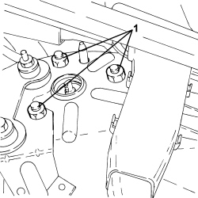
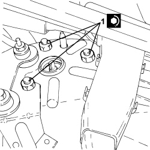

4410A12 FRONT SUSPENSION DAMPER (ONE), LH OR RH - FOR MCPHERSON STRUT SYSTEM - INCLUDES DISMANTLING/REASSEMBLY OF ASSEMBLY AT BENCH - R.R
- Path
- Procedures > 44 SUSPENSION AND WHEELS > 4410 FRONT SUSPENSION > 4410A FRONT DAMPERS AND SPRINGS > 4410A12 FRONT SUSPENSION DAMPER (ONE), LH OR RH - FOR MCPHERSON STRUT SYSTEM - INCLUDES DISMANTLING/REASSEMBLY OF ASSEMBLY AT BENCH - R.R
- Kind
- repair procedure (removal / refitting; the operation number is the code)
- Applies to
- all engines; all production periods
- Interactive page
- https://sloeber94.github.io/elrnDB-aBrrSpdr/en/#/946002195
Applies to: all engines; all production periods
 Removing
Removing
 Refitting
Refitting- Position the vehicle on a lift.
1. Undo the bolts fixing the front suspension shock absorber to the bodyshell.

Applies to: all engines; all production periods
- Remove the front suspension shock absorber assembly.
1. At the bench, position the shock absorber assembly (1a) on the tool (1b) for dismantling.
- Compress the shock absorber and the spring using the tool.
2. Undo the nut (2a) using the tool (2b).
- Release the shock absorber and spring compression using the tool.
3. Dismantle the various components from the shock absorber stem.

Applies to: all engines; all production periods
Refitting
Removing1. Assemble the spring and the shock absorber making sure that the spring is correctly positioned in relation to the reference on the lower spring plate as illustrated in the diagram.

Applies to: all engines; all production periods
- Assemble the various components on the shock absorber stem.
- Compress the shock absorber and the spring using the tool.
- Tighten a new nut to the specified torque using the tool.
- Remove the shock absorber assembly from the tool.
- When the fitting is completed check the exact position of the opening in the flexible mounting in relation to the shock absorber brackets.
- Place the front suspension shock absorber assembly back in its housing.
1. Tighten the nuts fixing the front suspension shock absorber to the bodyshell to the recommended torque.

Applies to: all engines; all production periods
- Remove the vehicle from the lift.
Topics linked from this page (1)
Topics that link to this page (8)
- H002 DRIFT WHILST BRAKING
- H005 POOR DRIVING COMFORT - AT FRONT
- H007 EXCESSIVE ROLLING/PITCHING - AT FRONT
- S017 FRONT SUSPENSION NOISE (WHISTLING/HUMMING)
- S018 FRONT SUSPENSION NOISE (KNOCKING)
- S047 STEERING WHEEL OSCILLATIONS/VIBRATIONS
- X050 TYRE WEAR
- 4410B68 UPPER TRACK CONTROL ARM (ONE), LEFT OR RIGHT FOR FRONT SUSPENSION - R.R. CHECK WHEEL GEOMETRY SEPARATELY